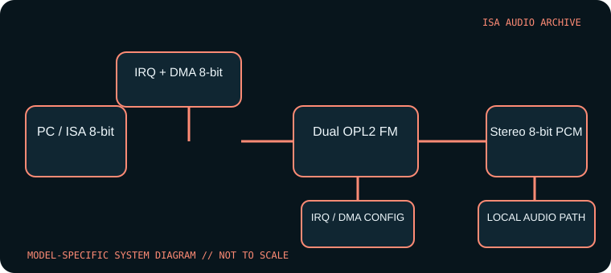

[ INDIVIDUAL COMPONENT // SOUND HARDWARE ]
Creative Sound Blaster Pro (CT1330)
The Sound Blaster Pro CT1330 is the first-generation SB Pro board, not the later CT1600 Pro 2.0 already cataloged separately. Match the CT1330 identifier: revisions in the broader SB Pro family changed FM chips, rates, and compatibility details.

Model-specific specifications
| Catalog identity | Creative Sound Blaster Pro CT1330 (first-generation SB Pro). Do not substitute CT1600 or assume all Pro-branded boards share its circuitry. |
|---|---|
| Bus / host | 8-bit ISA interface for PC-compatible DOS systems; the 16-bit physical ISA connector is not required for its 8-bit DMA audio transfers. |
| Sound engine / I/O | Stereo 8-bit PCM and dual-YM3812 OPL2 stereo FM arrangement are associated with CT1330. Typical base I/O is 220h with documented alternative bases; inspect jumpers before configuring software. |
| IRQ | Selectable legacy IRQ, commonly IRQ 2/5/7. Use the setting actually selected on the card and verify with Creative setup/diagnostic software. |
| DMA | 8-bit DMA channel for PCM (commonly DMA 1 or 3); no high 16-bit DMA channel is used. The BLASTER variable and game setup must match the chosen resources. |
| Software / host compatibility | Creative DOS installation utilities and Sound Blaster/SB Pro-aware games; stereo playback works only where software supports SB Pro mode. Period Windows drivers are tied to OS and board revision. |
| Connections / power | ISA-powered; line/speaker output, microphone/line input and game/MIDI port vary by board build. Verify gameport MIDI support and fitted CD headers on the actual card. |
Compatibility & configuration notes
The early Pro improves on the original Sound Blaster with stereo digital playback and stereo FM, but it remains an 8-bit PCM ISA device. Titles that only support mono Sound Blaster may play through compatibility mode; a stereo logo does not guarantee correct channel handling in every game. Record the DSP/FM chip markings and resource switch positions, since CT1330 and CT1600 are not interchangeable in the parts record.
- Photograph model/revision markings, resource switches or jumpers, connector panel and installed options before installation.
- For every configured IRQ, DMA channel, I/O address and driver, record the actual setting used by the host; do not rely on a family name or an assumed default.
- Power down and unplug the host before fitting or removing an ISA card; retain period setup tools and documentation with the specimen.
Sources & archival documentation
- Internet Archive — Sound Blaster Pro CT1330 manual searchArchival index for CT1330-era manuals and setup materials.
- DOS Days — Sound Blaster Pro referenceCompatibility history and board-family distinctions; verify CT1330-specific details against the manual.
Where related model variants exist, the original manual and the physical card’s complete part/revision marking take precedence over generalized family summaries.